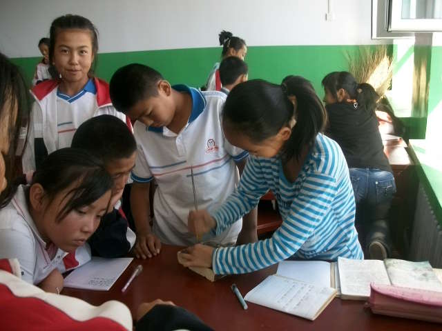

教育科学出版社 六年级(上)《科学》教学实验设计
作者：TeliuTe 来源：基础教程网
一、使用工具 返回目录 下一课1、材料：起子、榔头、木板、螺丝钉、铁钉(5厘米)
2、操作：将铁钉和螺丝钉垂直钉入木板0.5厘米，即课本插图中最高的钉子，然后再拔出来

3、小结：榔头太少了，只找到一把，起子用双头的或梅花，注意安全，不要钉太深，垂直为标准
4、板书：
第 1 课 简单机械
1、机械：用来维修或制造的工具
2、工具：锤子、起子、钳子、扳手、剪子、斧子
3、作用：钉子、螺钉、铁丝、螺母
本教程由86团学校TeliuTe制作|著作权所有
基础教程网：http://teliute.org/
美丽的校园……
转载和引用本站内容，请保留版权信息和本站链接。